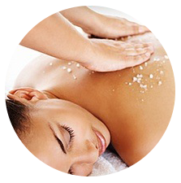

BACK TREATMENTS

Buff & Mineral Salt Massage
$ 120.00
Time Dur: 100 min
This treatment includes a traditional Korean buff along with mineral salt. The mineral helps reduce inflammation and removes toxins that block the pores of the skin; while at the same time encourages circulation of blood. The abrasive friction between skin and salt helps with exfoliation and are better suited for people with dryer skin. Enjoy the full body salt scrub, watch your skin glow, and feel your muscles relax. Your full body treatment comes with a thorough facial cleansing, an application of a collagen facial mask, shampoo and conditioning.
Request Reservation
Buff & Brown Sugar Polish
$ 120.00
Time Duration: 100 min
This treatment includes a traditional Korean buff along with mineral salt. The mineral helps reduce inflammation and removes toxins that block the pores of the skin; while at the same time encourages circulation of blood. The abrasive friction between skin and salt helps with exfoliation and are better suited for people with dryer skin. Enjoy the full body salt scrub, watch your skin glow, and feel your muscles relax. Your full body treatment comes with a thorough facial cleansing, an application of a collagen facial mask, shampoo and conditioning.
Request Reservation
Buff & Brown Sugar Polish
$ 120.00
Time Duration: 100 min
This treatment includes a traditional Korean buff along with mineral salt. The mineral helps reduce inflammation and removes toxins that block the pores of the skin; while at the same time encourages circulation of blood. The abrasive friction between skin and salt helps with exfoliation and are better suited for people with dryer skin. Enjoy the full body salt scrub, watch your skin glow, and feel your muscles relax. Your full body treatment comes with a thorough facial cleansing, an application of a collagen facial mask, shampoo and conditioning.
Request Reservation
Eucalyptus & Mud Back Treatment
$ 85.00
Time Duration: 60 min
A wonderful relaxing treatment that incorporates deep cleansing, exfoliation, light massage to increase circulation, and a detoxify Mud mask to draw out impurities.
Request Reservation
Microdermabrasion for Keratosis Pilaris
$ 35.00
Time Duration: 30 min
Ever wondered what the bumps on the back of your arms are called? ‘Keratosis Pilaris’ is their technical name. These tiny little bumps that look like goose bumps form when too much keratin builds up in the skin’s hair follicles. This gives skin a bumpy texture. They can also look red in appearance. During microdermabrasion exfoliating crystals and a vacuum action help to remove the build up.
Request Reservation
Décolleté Treatment
Price varies on Enzyme $ 50.00
Time Duration: 45 min
When thinking about skin care, the face is generally the first area of concern that comes to mind. However, there are other parts of the body that can provide telling signs of age after going years without proper protection and skin care. Two areas that are often neglected in this way are the neck and décolleté.
Request Reservation
CHEMICAL PEELS
Cranberry Cream Acne Peel
$ 130.00
Time Dur: 300 min
Exfoliate and reduce oil with a 20% salicylic cranberry creamy peel. This aggressive mixture helps to resurface and refine skin and pores, remove oil and debris and protect from bacterial infections. For oily & acneic skin. Not suitable for all skin tones.
The Cranberry Cream Peel with Glycolic Boost ** not available for first time clients*
Request Reservation
Glycolic Peel
$ 75.00
Time Duration: 30 min
For best results this is sold in a series of 4 or 6, and service should be space one week apart. This peel is for those who are concerned with anti aging, pores, excess oil, congestion, and acne prone skin.
Request Reservation
Lactic Peel
$ 75.00
Time Duration: 30 min
This peel is for those who are concerned with hyperpigmentation, melasma, and dry/dehydrated skin.
Request Reservation
TCA Depigmentation Peel
$ 85.00
Time Duration: 30 min
For best results this is sold as an 8 week treatment. This consist of proper home care for one week prior to treatments, the next 3 weeks will consist of treatments one week apart. There will be minimal down time to minor flaking. Your skin will rest between weeks 5-7, following home care is a must. Week 8 will be a medium depth peel with some down time, this varies between individuals..
Request Reservation
SKIN CARE
Orange Berry Facial
$ 100.00
Time Dur: 60 min
This limited edition treatment is suitable for all skin types. It uses a combination of enzymes & sugar cane that will gently exfoliate the skin revealing a beautiful glow, increase hydration and plump up fine lines. *Retinol exfoliating scrub $25: can be layered for improvement in signs of aging, break up clogged pores and even skin tone.
Request Reservation
Cherry Blossom Facial
$ 125.00
Time Duration: 90 min
This treatment includes a traditional Korean buff along with mineral salt. The mineral helps reduce inflammation and removes toxins that block the pores of the skin; while at the same time encourages circulation of blood. The abrasive friction between skin and salt helps with exfoliation and are better suited for people with dryer skin. Enjoy the full body salt scrub, watch your skin glow, and feel your muscles relax. Your full body treatment comes with a thorough facial cleansing, an application of a collagen facial mask, shampoo and conditioning.
Request Reservation
Acne Facial
$ 110.00
Time Duration: 60 min
This treatment is customized and the enzymes will change due to individual’s skin. This will have deep cleansing, enzyme exfoliation, light facial massage or pressure points, followed with a unique clay based Strawberry Spearmint mask that will absorb excess oil, draw out impurities, and refine the pores. This mask has antibacterial, antifungal properties and will draw out impurities and toxins. Appropriate skin care will follow.
Request Reservation
Diamond Microdermabrasion & Enzyme Facial
$ $160.00
Time Duration: 60 min
This is a wonderful combination. Using both enzyme exfoliation accompanied with diamond microdermabrasion will result in glowing skin with soft & smooth texture, refined pores, reduction of lines & wrinkles, and lightening of hyperpigmentation and acne scarring.
Request Reservation
Quick Pick Me UP
$ 60.00
Time Duration: 30 min
This 30 minute facial is great for when you need a little refresher. It consists of deep cleansing, enzyme exfoliation, followed by a nourishing mask to give your skin a boost. Extractions not included.
Request Reservation
Orange Blossom Facial
$ 100.00
Time Duration: 60 min
Orange blossoms in the spring fill the air with wonderful wafts of fragrance. This spring, as we enjoy the scents and the fruits, we can also enjoy the antioxidant benefits of Orange and Goji Berries on our skin. The Orange Zest enzyme contains 4% lactic and 1-1/2% glycolic to create progressive exfoliation, while the yogurt creaminess brings hydration and softness to our skin. Create a refreshing citrus and creamy anti-aging facial for your clients this spring.
Request Reservation
EYELASH EXTENSIONS
Minkys Lash Extensions
$ 200.00
Full Set, 65 lashes per eye
Lash Extensions Lash Extensions are a great way to add length and volume to your natural lashes, each extension is connected to an individual lash creating a beautiful and natural look. .
Request Reservation
Minkys Lash Extensions
$ 160.00
Half Set, 45 lashes per eye
Lash Extensions Lash Extensions are a great way to add length and volume to your natural lashes, each extension is connected to an individual lash creating a beautiful and natural look. .
Request Reservation
Minkys Lash Extensions
$ 130.00
Partial Set, 30 lashes per eye
This treatment includes a traditional Korean buff along with mineral salt. The mineral helps reduce inflammation and removes toxins that block the pores of the skin; while at the same time encourages circulation of blood. The abrasive friction between skin and salt helps with exfoliation and are better suited for people with dryer skin. Enjoy the full body salt scrub, watch your skin glow, and feel your muscles relax. Your full body treatment comes with a thorough facial cleansing, an application of a collagen facial mask, shampoo and conditioning.
Request Reservation
Minkys Lash Extensions
$ 50-60.00
Touch ups, 20-30 lashes per eye
This treatment includes a traditional Korean buff along with mineral salt. The mineral helps reduce inflammation and removes toxins that block the pores of the skin; while at the same time encourages circulation of blood. The abrasive friction between skin and salt helps with exfoliation and are better suited for people with dryer skin. Enjoy the full body salt scrub, watch your skin glow, and feel your muscles relax. Your full body treatment comes with a thorough facial cleansing, an application of a collagen facial mask, shampoo and conditioning.
Request Reservation
Lash Lift
$ 110.00
Time Duration: 90 mins.
Who would like the look of lifted longer lashes without the upkeep of extensions?. If you’re anything like us, you're on a constant quest for longer, fuller lashes. “Keratin lash lift” will set you back $150 and lasts eight to 12 weeks.
Request Reservation
MAKE-UP ARTIST
Bridal Make-up and Hair
$ 175.00
Time Dur: 90 min
There will be more pictures taken of you on your big day than any other single day in your life. So why not invest in a professional makeup artist who will help you achieve exactly what you are looking for to feel extra special?
Request Reservation
Stage Make-up
$ 75.00
Time Duration: 60 min
If you're a performer, stage makeup is essential. The bright stage lights will wash out your skin tone and obscure your facial features, and stage makeup is applied to prevent that from happening. The way you put on makeup for the stage is a lot different than your everyday makeup, though. The results may seem pretty dramatic in the mirror, but onstage it looks flattering and makes you easily recognizable from a distance.
Request Reservation
Traditional Make-up Application
$ 80.00
Time Duration: 75 min
Full Face Makeup application customized for you using brushes and makeup sponges.
Request Reservation
Air Brush Make-up Application
$ 150.00
Time Duration: 60 min
With the use of the Airbrush tools I create a flawless makeup application customized for your particular needs.
Request Reservation
Make-up for photo Sessions
$ 75.00
Time Duration: 45 min
So you’ve booked a photographer, planned your outfit and location and can’t wait to have a collection of memories adorning your home. But what you may not have thought about was your makeup. I understand, you want to keep it natural. Whether you are a high school senior, a new mommy-to-be or a mother of three preparing for your photo shoot, your makeup shouldn’t be an after-thought.
Request Reservation
SFX & Halloween Make-up
Price varies on Enzyme $ 100-120.00
Time Duration: 90 min
If you want to show up to the party with a truly impressive costume and makeup. Try your hand at a beautiful, eerie or flat-out scary Halloween look.
Request Reservation
MAKE-UP LESSONS
Bronze Package
$ 150.00
Time Dur: 90 min
Includes: Contour Make-up, Natural Make-up, and False Eyelash Application
Request Reservation
Silver Package
$ 200.00
Time Dur: 120 min
Includes: Contour Make-up, Natural Make-up, False Eyelash Application, and Evening Make-up
Request Reservation
Gold Package
$ 250.00
Time Dur: 150 min
Includes: Contour Make-up, Natural Make-up, False Eyelash Application, Corrective Make-up, Evening Make-up, and Face Chart detailing product placement
Request Reservation